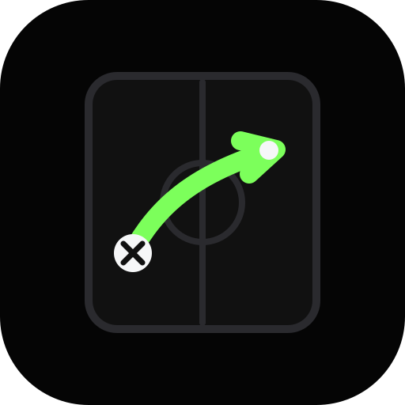
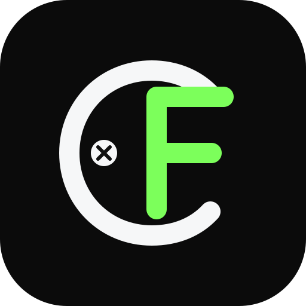

01 Clean Route
Closest to the current logo, but simpler and more app-icon friendly.
Five first-pass directions. These are SVG drafts, so the chosen one can be tuned precisely.

Closest to the current logo, but simpler and more app-icon friendly.
More about trust, verification, and clean football information.

Bolder brand mark, less literal, stronger as an app icon.
Leans into the 9am brief, news cards, and football summaries.
More energetic and schedule-focused, with a live match signal.